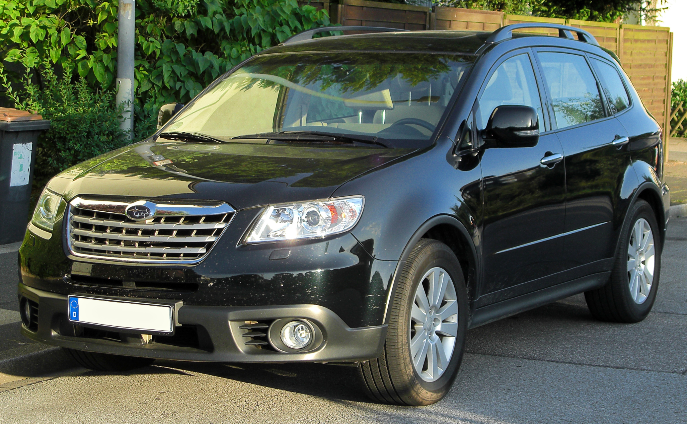

Subaru Tribeca — среднеразмерный кроссовер японской компании Subaru, выпускавшийся с 2005 по 2014 год. На некоторых рынках выпускался как Subaru B9 Tribeca. Название «Tribeca» происходит от «Трайбека» — окрестности Нью Йорка. Модель построена на платформе Subaru Legacy. Существуют как пятиместные, так и семиместные модели.
Доступен на рынках Северной Америки (с 2004 года), России (с начала 2006 года), Австралии (с 2006 года), в Европе (с 2007 года). Также продается в Чили, Аргентине, КНР и некоторых странах Юго-Восточной Азии.

1 января 2004 года Subaru официально представила свой семиместный внедорожник, основанный на увеличенном варианте Legacy и новой задней подвеске, прототип B9X. 1 апреля 2004 года Subaru представила серийную модель Subaru Tribeca, основанную на концепте. 11 мая 2004 года начались продажи. С 7 января 2006 года продается в России.

В 2007 году на Нью-Йоркском автосалоне компания Subaru представила новое поколение автомобиля Tribeca. Subaru решила отказаться от "смелого" дизайна, которым она в своё время "распугала" всех потенциальных покупателей предыдущей версии Tribeca. Новый автомобиль получился более сдержанным, весомым и по-своему интересным. Новое поколение Tribeca стало оснащаться 3,6 литровым двигателем, развивающим мощность 258 лошадиных сил при 6000 об/мин, а его крутящий момент составит 34 кг/м. Что касается трансмиссии, то на автомобиль устанавливается 5-ступенчатая АКПП. Привод — полный, с межосевым дифференцалом, блокируемым многодисковой муфтой. В салоне Tribeca семь мест. С обновлением модели конструкция подвески была модернизирована: электроника регулирует момент блокировки межосевого дифференциала.
Автомобиль выпускался на заводе в штате Индиана, США с 2007 до 2014 года.
18 октября 2013 года, Autoblog , Jalopnik, и Cars.com подтвердили, что Subaru сообщила своим дилерам, что производство Tribeca закончится в январе 2014 года из-за маленьких продаж,так как Subaru продала всего 78 000 автомобилей с 2005 года, что делает его одним из худших продаваемых автомобилей в США в 2011 и 2012 годах; в 2013 году, только 1247 автомобилей были проданы в течение первых девяти месяцев и заняла седьмое место среди худших продаж автомобилей в США для 2013 модельного года. Subaru планирует выпустить на замену Tribeca автомобиль, высококлассный 7-местный кроссовер, возможно, на основе Subaru Exiga, чтобы конкурировать с Ford Explorer и Nissan Pathfinder, которая была в стадии планирования, в целях привлечь новых покупателей кроссоверов.